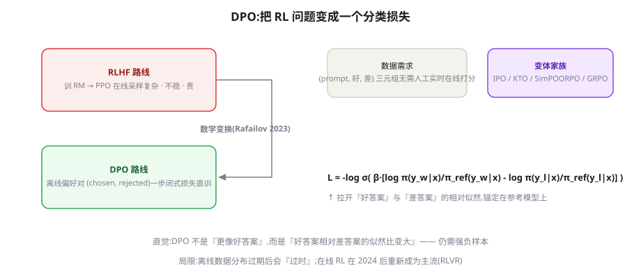

DPO 及变体：IPO、KTO、SimPO、ORPO
DPO 用一段闭式解把「偏好对直接变成损失函数」，砍掉了 RM 与在线采样——对齐训练从此进入单卡时代。本章推导它的直觉、拆解五个变体的不同假设、给出选型决策表与踩坑清单。
DPO 的推导直觉：从 RL 目标到分类损失
DPO（Direct Preference Optimization, Rafailov et al. 2023, arXiv:2305.18290）的漂亮之处在于一条数学链：RLHF 的 KL 约束奖励最大化目标，存在闭式最优解——最优策略正比于参考策略乘以奖励的指数（π*(y|x) ∝ π_ref(y|x)·exp(r(x,y)/β)）。反解这个关系，奖励可以用「策略与参考策略的似然比」表达——把 RM 代回 RLHF 目标后，整个「训 RM + PPO」的过程塌缩成一个对「偏好对」的分类损失：
标题即洞见：你的语言模型本身就是（隐式的）奖励模型。DPO 的损失拉开「好答案相对差答案的似然比」，同时锚定在参考模型上防漂移。实验上在情感、摘要、对话任务上与 RLHF 打平或更优，而工程成本低了一个数量级。
from trl import DPOTrainer, DPOConfig
from transformers import AutoModelForCausalLM, AutoTokenizer
model = AutoModelForCausalLM.from_pretrained("Qwen/Qwen2.5-7B-Instruct")
ref = AutoModelForCausalLM.from_pretrained("Qwen/Qwen2.5-7B-Instruct") # 参考模型
config = DPOConfig(
beta=0.1, # 缱绳强度: 与PPO的β同源
learning_rate=5e-7, # 比SFT低两个量级
per_device_train_batch_size=2,
gradient_accumulation_steps=16,
num_train_epochs=1, # DPO 通常1个epoch
max_length=4096)
trainer = DPOTrainer(
model=model, ref_model=ref, # 只需策略+参考(两个模型)
args=config,
train_dataset=pref_dataset, # 字段: prompt/chosen/rejected
processing_class=tokenizer)
trainer.train()对照第 40 章的四模型协奏：DPO 只需要策略与参考（两模型）、无在线采样（离线数据一遍过）、损失是标准交叉熵家族（数值稳定）。工程量从「重灾区」降为「与 SFT 相当」——这就是它在开源社区大爆发的全部原因。

DPO 数据工程：比想象更讲究
DPO 的效果对数据形态极其敏感，四条经验值得单列。① 偏好差要「因果清晰」——chosen 与 rejected 最好只在一个「可指认的维度」上不同（有无引用、有无礼貌确认、是否遵守格式），混着多重差异的对会让模型学错因果（以为是长度造成的）。构造技巧：对同一回答做「单因素修改」生成 rejected（删掉引用、加上错误断言、打乱结构）。② 难度分层——「明显好 vs 明显差」的对（简单样本）让模型学到方向，「相近但一优一劣」的对（困难样本）教出分辨力——两者按 2:1 混合，纯困难样本会让训练不稳定。③ 拒绝「人工硬造」的 rejected——把好回答改坏（随机删句、调换顺序）造出的 rejected 带着人为痕迹，模型学到的是「识别伪造」而非「分辨质量」——rejected 必须来自真实分布（其他模型的输出、采样的低分回答、真实的差评回答）。④ 提示词覆盖要广——DPO 训练的「能力」绑定在 prompt 分布上：提示词覆盖面窄，改进就是窄条。四条合起来的成本直觉：DPO 的数据工程比 SFT 更细——SFT 每条独立，DPO 的每「对」都有内部结构要设计。
五个变体：每个都在修 DPO 的一个毛病
DPO 并非完美，社区围绕它的三个弱点演化出一族变体，每个变体都是一次「假设修正」：
| 方法 | 修 DPO 的什么问题 | 机制要点 | 何时选它 |
|---|---|---|---|
| DPO | —（基线） | 似然比拉开 chosen/rejected | 默认起点 |
| IPO | 过拟合：DPO 会无限拉开偏好对差距 | 改为回归「固定间隔」而非无上界分离 | 偏好噪声大、易过拟合 |
| KTO | 数据形态限制：DPO 必须成对 | 只要「好/坏」的二元标签（ prospect theory 的损失厌恶启发） | 只有单边标签（点赞/点踩日志） |
| SimPO | 参考模型的部署成本 | 去掉 ref，用序列平均长度归一化当隐式基准 | 想省一半显存、线上多模型切换 |
| ORPO | 流程限制：DPO 需要先 SFT | 把偏好损失并进 SFT（一步到位 odds-ratio） | 从 base model 一步对齐 |
所有 DPO 系共享一个 RLHF 没有的问题：它们只能学习「离线数据分布内」的改进。偏好对是旧模型（或别的模型）生成的——DPO 训练后，模型在「这些答案之间」做出更好的取舍，却很难「发明离线数据里不存在的行为」。RLHF 的在线采样则让策略不断生成新回答、获得新反馈、探索数据分布之外的空间。实证表现：一轮 DPO 的提升显著，但多轮 DPO 的边际收益快速衰减（数据分布被耗尽），而多轮在线 RL 的提升曲线更长。2024-2025 年「RL 复兴」（第 43 章）的深层原因正在于此：离线对齐是「从存量中学习」，在线 RL 是「向增量要进步」。工程结论：DPO 适合「把明确的偏好落到实处」（一轮为主），RL 系适合「持续的能力爬坡」——两者在四级火箭里其实承担不同段落。
KTO 深看：为「产品日志」而生的变体
五个变体里，KTO 值得单独一节，因为它与生产数据形态的匹配度最高。KTO（Kahneman-Tversky Optimization）的动机：真实产品日志里的信号几乎总是单边的——用户点赞了某个回答、点踩了另一个，但你没有「同一个 prompt 的成对比较」。DPO 系对此无能为力（必须成对），常见 workaround 是「随机配对」（把同 prompt 的赞踩答案硬凑成对）——破坏了比较的语义。KTO 的解法：改用前景理论（行为经济学的损失厌恶）构造损失——好回答（thumbs up）直接最大化其价值、坏回答直接压低，各自独立成立，无需成对。附带的行为学红利：损失厌恶的不对称设计（压低坏答案的力度大于抬高好答案）在很多任务上带来更保守、更稳的改进——「先学会不犯错」的价值观被写进了损失函数。工程结论：你的日志里有点赞/点踩 → KTO 是从产品反馈直达对齐的最短路径，这条路径也是「数据飞轮」（第 47 章）在对齐环节的自然形态。
① 隐性奖励黑客（chosen 似然下降）——DPO 的梯度可以「同时压低两者」来拉开差距；识别：训练中 chosen 的平均 log-prob 持续下降；急救：换 IPO（约束间隔）或加入 SFT 正则项（混合 loss 锚定 chosen 质量）。② 长度膨胀——rejected 恰好较短时，模型学会「长=好」；识别：平均输出长度随训练单调上升；急救：长度归一化变体（SimPO 天然带长度归一）或数据侧平衡。③ ref 模型选错——ref 必须是「生成偏好数据的那个模型」（或其近似）；用「别的模型」当 ref，似然比的基准就错了，训练方向失真。④ beta 与 lr 的耦合翻车——调大 beta 后没降 lr（或反之），组合效果过猛；经验：一次只动一个，每个配置固定种子跑三次看方差（第 39 章的单变量纪律）。四个现场共享一个预防器：训练前后各跑一次固定评测集 + 人工盲评 20 条——机器指标会骗人，盲评不会。
一个「从经济学看 DPO」的视角帮助记忆：DPO 把偏好对变成了训练的「现货」，RLHF 把 RM 变成了「期货」（先投资建裁判、再用于多轮训练）。现货的优点是即时、透明、无中间商；期货的优点是可以「杠杆」——一个好 RM 可以服务多轮训练、多个任务。与金融市场一样，选择现货还是期货，取决于你的资金规模（算力）、对波动的容忍（工程风险）与投资期限（目标爬坡还是落袋为安）。中小团队用现货（DPO），大机构配置期货（RM+在线 RL），是最自然的资产配置——技术选型的经济学隐喻往往比算法细节更接近决策本质。
DPO 的「课程学习」：数据顺序也是超参
一个被多数教程忽略的杠杆：偏好数据的呈现顺序。DPO 的损失对「简单对」（差异明显的）梯度更大——如果训练初期就被简单对主导，模型先学会「粗分辨」，后期困难对的信号反而被淹没。两种课程策略：由难到易——先喂「相近但一优一劣」的困难对（模型还分不出时损失大、学得多），后期简单对做巩固；难度混合但不均——全程 2:1 混合，但前期把困难对的采样权重 ×2。两种策略都在实践中优于随机顺序。更深一层的洞察：DPO 的「课程」其实是在管理「模型的注意力分配」——与第 23 章的上下文工程共享同一个底层命题：信息的呈现顺序影响学习的重点。训练与推理，在这件事上是同构的。
补一个与 Agent 工程直接相关的应用场景：用 DPO 优化 Agent 的「过程行为」。偏好不必只标「最终答案」——你可以标注「两条轨迹哪个更好」（第 40 章 Agent RLHF 的粒度讨论），把轨迹对交给 DPO：chosen 是「先查订单再回复」的轨迹、rejected 是「直接凭空回答」的轨迹。这种「轨迹级 DPO」在实践中被多个 Agent 团队用于强化过程纪律（先检索后答、失败后重试、并行调用）——它比完整 Agent RL 便宜一个量级，比提示词约束可靠一个量级，是 Agent 团队「低成本练肌肉」的现实选项。注意轨迹对的数据工程量更大（要对齐状态节点），建议从「单步决策对」起步再过渡到全轨迹对。
数字感补充（7B 模型、LoRA-DPO）：1 万对偏好的标注（强模型生成 + 人工挑选模式）约 1~2 人周；训练单卡半天；全程成本约为同规模 RLHF 的十分之一。产出预期：格式/风格/拒答类目标显著改善（人工盲评可感知），推理/知识类目标基本不动（离线数据的分布天花板）。如果你的期望清单里出现后者，请直接规划第 43 章的路线——期望错位是 DPO 项目「失败」的第一大原因，而那种失败其实从未发生：DPO 把它承诺的东西做到了，只是承诺清单与你想要的不一样。
在流水线中的位置：DPO 的标准站位
把本章与前后章串成一条生产线，给你一张「对齐流水线」的完整站位图：站位一（SFT 后主对齐）：SFT → DPO（本章）→ 部署——中小团队的标准线，全程单卡可行。站位二（在线能力爬坡）：SFT → DPO → RLVR/Agent RL（第 43-45 章）——旗舰模型路线，DPO 负责「品格」，RL 负责「能力」。站位三（迭代对齐）：SFT → DPO → 收集新模型的输出再做新一轮偏好标注 → DPO v2 → ……（迭代式对齐，ref 逐轮更新）——适合偏好标准持续演进的业务。站位四（混合）：可验证域走 RLVR、主观域走 DPO，双路并行合成——头部模型厂商的形态。你的团队大概率从站位一起步，按业务需要向二/三演进——每一站的工程资产（数据、评测、模板管理）都是下一站的输入，这与第 39 章的飞轮观完全一致。
DPO 实操清单与踩坑
- 数据质量三查：chosen/rejected 的差异要「有意义」（只差一个错别字的对没有训练价值）；长度分布要平衡（长度偏差在 DPO 里同样存在且常被忽视）；同一 prompt 多对时抽样而非全用（相关性爆炸会放大梯度噪声）。
- beta 的手感：β 小（0.05~0.1）更激进（离 ref 远、效果强但易过优化），β 大（0.2~0.5）更保守；与 RLHF 的 β 同一角色。
- 学习率是第一敏感项：5e-7 起步（SFT 的百分之一量级），loss 下降但「chosen 似然也下降」是 DPO 的已知现象（隐性奖励黑客：拉开差距靠压低 rejected 也靠压低 chosen）——监控 chosen 似然的变化曲线，暴跌即减速。
- 一轮为主：多轮 DPO 用「新数据 + 重置 ref（用上一轮模型当新 ref）」的方式，效果优于老数据反复练。
- 与 SFT 的顺序：标准是 SFT → DPO；数据充足时「SFT 中混入偏好对（ORPO 思路）」可以省一个阶段，但可控性略降。
三个高频疑问
Q：DPO 与 RLHF 的效果到底差多少？诚实的回答是「任务依赖，且差距在缩小」。DPO 原论文在情感/摘要/对话上打平；后续的对比研究显示：在「有强 RM + 充足在线采样预算」的条件下，在线 PPO 在复杂任务（推理、代码）上仍占优（分布外探索的收益）；在「离线数据充足、任务偏风格/格式」的条件下，DPO 持平甚至更稳（工程简单带来的迭代速度优势）。对多数团队的决策含义：第一轮对齐用 DPO（快、稳、便宜），当「离线数据耗尽」的信号出现（边际收益衰减）且确需继续爬坡时，再考虑在线 RL（第 43 章）。
Q：DPO 可以在 LoRA 上做吗？可以且效果不错——ref 模型甚至可以直接用「合并前的基座」（LoRA 未合并时基座本身就是 ref），显存与计算都省。注意两点：学习率比全参 DPO 再降一档（LoRA + 高 lr 更容易把适配器练崩）；beta 的手感在全参与 LoRA 间略有差异，从 0.1 起调。LoRA-DPO 是中小团队「一周内完成一次对齐迭代」的现实路径——第 39 章的工程经验几乎全部平移适用。
Q：DPO 之后的模型还需要 RL 吗？回到「两级分工」（本章小结）：如果你的目标只是「把已知的偏好落实」（更礼貌、更守格式、拒绝某些模式），DPO 之后通常无需 RL；如果目标是「持续的能力爬坡」（推理更强、代码更准），DPO 只是补齐「品格」，能力要靠 RLVR/Agent RL（第 43-45 章）。判断信号：DPO 迭代后评测收益衰减——那不是「DPO 没用好」，而是「离线数据的天花板到了」。
第 39 章的 200 条 JSON 格式数据可以复用：实验设计——用你的 SFT 模型对同一批 prompt 各生成 4 个回答，用强模型（或你自己）标注 best/worst 构成偏好对；然后分别用 DPO（r=8 LoRA）与 KTO（若有单边标注）练一次；观察三件事：格式遵从率是否进一步提升（SFT 只到 90% 的话，DPO 常能推向 97%+）；输出多样性是升是降（DPO 后检查是否「口径统一但呆板」）；chosen 似然曲线的走势（隐性黑客的识别练习）。这个实验的完整报告（三图 + 结论）存入你的训练档案——它同时是你理解「SFT 与对齐的分工」的第一手证据。
本章的定位总结可以浓缩为一个「接力」隐喻：第 40 章的 RLHF 是「重装部队」（全副武装、火力最强、后勤最重），本章的 DPO 家族是「轻步兵」（轻装疾进、成本低廉、射程有限——受离线数据射程所限）；第 42 章的 RLAIF 是「无人机侦察」（标注成本骤降但视角有偏差）；第 43 章的 RLVR 是「精确制导」（奖励不可作弊但只打可验证目标）。四种部队在「对齐战争」中各司其职，指挥官的工作是根据战役目标配置兵种组合。带着这个兵力地图进入下一章：看看当「标注员」也换成 AI 时，对齐的成本曲线会发生怎样的历史性位移。
本章的终极自测题（检验你是否真的理解了 DPO 的哲学）：假设你有一个「完美 RM」——它的打分与人类真值完全一致。问题：你还会选择 DPO 吗？表面答案「有了完美 RM 当然用 RLHF」是对的，但更深的答案是「即使有完美 RM，DPO 仍有一席之地」——因为 DPO 的离线性质带来了 RLHF 没有的工程属性：可复现（无采样的随机性）、可审计（损失就是数据上的分类，行为完全可解释）、可中断续训（没有在线状态）。这个题目的教育意义：技术选型的成熟标志，是能同时说出每个选项的「不可替代属性」——而不是排出一个「谁最强」的虚幻名次。DPO 的不可替代属性是「确定性与可审计」，这个属性让它在合规敏感、可复现要求高的部署场景里，永远保有一席。
五个变体的名字容易混，用「解锁了什么约束」来记：DPO（基线：要成对、要有 ref、要先 SFT）→ IPO 只改损失形状（修过拟合，约束全保留）→ KTO 解锁「不成对」→ SimPO 解锁「无 ref」→ ORPO 解锁「无需先 SFT」。面试或选型时，先报出你的约束（数据形态/显存预算/流程阶段），再从解锁表里找对应变体——这个「约束驱动」的表达方式，比背诵每个变体的损失公式更能体现理解深度。公式会忘，约束会一直跟着你。
至此，偏好对齐的「离线家族」（DPO 及其变体）已完整登场。回顾第 40-41 两章合起来的图景：你拥有了「在线重装（PPO）」与「离线轻装（DPO 系）」两支部队，也理解了它们各自的弹药来源（在线采样 / 离线偏好对）。下一章解决一个共同的瓶颈——偏好数据从哪来：当「人类标注」成为规模化的瓶颈时，让 AI 自己当裁判（RLAIF）与让宪法当裁判（Constitutional AI）如何改变这个游戏的成本结构。那是「对齐民主化」的第一步，也是 Anthropic 技术哲学的一次集中展示。
补一条与评测篇的预连接，因为它常被忽略：DPO 训练后的评测，除了常规质量指标，还应专项测「rejected 行为的复发率」——你训练时明确压低的那类行为（如无引用回答、越权承诺），在新的分布上还会不会出现。这个专项指标的实现就是把 rejected 的特征做成检测器（规则或分类器），在留出集上跑。它会揭示 DPO 的「泛化边界」：模型学会的是「不在这批数据上犯这个错」还是「不犯这类错」——前者的系统只是戴上了镣铐，后者的系统才是真正改了品格。两者的区别，只有专项复发率能告诉你。
本章知识与第 47 章数据飞轮的连接做最后一笔：DPO 的偏好对数据有三个「增量来源」，恰好构成飞轮的三根辐条——生产日志的单边信号（KTO 化）、模型新输出的采样标注（迭代 DPO）、以及失败案例的「反事实对」（如果这样回答就好了）。飞轮转起来后，DPO 的迭代节奏可以稳定在「周级」——每周边际改进一点，比季度级的大训练更贴近业务。飞轮工程的全貌在第 47 章展开，此处先记住结论：DPO 系因其离线轻量的天性，是对齐飞轮最顺滑的初始引擎。
DPO 成功的度量：三层数字与一层人感
「DPO 练好了吗」需要一个分层度量体系，机器指标给趋势、人感给裁决。第一层：损失与似然曲线——DPO loss 稳定下降、chosen 似然不塌、margin（好坏差距）扩大——三条线健康才继续；这是训练中的实时仪表。第二层：静态评测集——用第 13 章的方法建「偏好领域的留出集」（训练偏好对的同分布新样本），跑 win-rate（新模型 vs 旧模型的盲评胜率，裁判用强模型或人）；胜率 60% 以上才算有效迭代，55% 以下基本是噪声。第三层：行为专项——针对你的对齐目标设计专项（拒答的准确率、格式遵从率、特定禁词的出现率），它们是「这次训练到底改变了什么」的直接证据。第四层：人感抽检——每周从生产流量抽 20 条新旧模型对比盲评，任何机器指标与人的感受持续背离时，以人感为准并回查评测集（评测集本身会过时）。四层之外的元教训：DPO 项目最常见的「成功假象」是只有第一层的曲线好看——loss 下降从来不等于模型变好，这条纪律从 SFT 章贯穿到本 章，值得再钉一次。
关于「DPO 训练时的多任务混合」还有一个值得记录的实践观察：把不同目标（拒答、格式、语气）的偏好对混在一次训练里，效果常常不如分批迭代——多目标在一次训练中互相拉扯（每个目标的梯度方向不同），且失败时无法归因。成熟的节奏是「一次一目标」：本周的偏好对聚焦「拒答准确性」，下周聚焦「引用规范」，每轮都全量评测但只统计当前目标的专项改善。这种「对齐的迭代节奏」与产品迭代的节奏天然同构——对齐不是一次性工程，而是与产品共同成长的持续过程，数据的组织方式应该服务于这种节奏而非一次性大考。
至此本章完整。把本章与第 40 章合起来的选择题最终版：你有偏好数据（成对或单边）、有算力预算、有目标（品格落实或能力爬坡）——翻回表 41-1 与站位图，路径自现。下一章，我们把标注员的位置交给 AI 自己，看看对齐的成本曲线如何被改写。
补遗（关于 beta 与数据规模的交互）：一个常见的经验规律——数据越多，beta 可以适当调大（0.2+），因为充足的偏好信号让模型「有据可依」，更强的缰绳只收紧不必要的漂移；数据少（数千对）时用小 beta（0.05-0.1）让模型「先学到方向」。这与第 39 章「数据少则 epoch 少」的保守哲学同源：小数据下，一切激进的超参都是在拿稳定性冒险。
DPO 论文发表（2023 年 5 月）到开源社区大规模采用（2024 年上半年）之间有一个有趣的滞后期——原因不是技术消化，而是「心理锚定」：在 RLHF 范式中成长起来的团队，最初难以相信「不做 RL 也能对齐」。这个滞后提醒我们：范式转换的阻力常来自成功者的路径依赖。到 2024 年末，DPO 系已成为开源模型对齐的主流配置（Tulu、OLaMa、各类开源旗舰的 recipe 里几乎都有它的身影），「轻量对齐」从异端变成常识——一个技术思想从提出到普及的完整周期样本，值得每个创新者玩味。
本章的所有实操表格、约束解锁表与四层度量体系，连同上一章的曲线知识，构成了「对齐工程」的前半部工具箱；下一章 RLAIF 补上「数据供给侧」的下半部。工具箱在手，第 40-42 章合起来，就是你规划一次完整对齐项目的全部蓝图。
本章小结
- DPO 把「训 RM + PPO」塌缩为偏好对上的分类损失：两模型、离线、与 SFT 同工程量。
- 变体族谱：IPO 修过拟合、KTO 解锁单边标签、SimPO 去 ref、ORPO 一步到位——每个变体解锁一个约束。
- 深层弱点：离线数据的分布天花板——一轮显著、多轮衰减；持续爬坡要在线 RL。
- 实操五条：差异要有意义、长度要平衡、β 如缰绳、lr 极小、chosen 似然监控。
- 定位：DPO 把「明确偏好落到实处」（一轮），RL 系做「持续能力爬坡」——四级火箭的不同段落。
自测题
- 用「信号来源」的框架，把 RLHF/DPO/RLAIF/RLVR 四条路线画进一张 2×2（在线/离线 × 人类/自动）矩阵。
- 你的产品日志里只有「点赞/点踩」没有成对比较——选哪个变体？数据要怎么清洗才能用？
- DPO 训练后 chosen 回答的似然也下降了——这在数学上为什么「正常」？什么情况下是「坏事」？
- 为什么说「多轮 DPO 的边际衰减」是离线学习的宿命？用「分布耗尽」的语言解释。
参考文献与延伸阅读
- Rafailov, R. et al. (2023). Direct Preference Optimization: Your Language Model is Secretly a Reward Model. NeurIPS 2023. arXiv:2305.18290
- Azar, M. et al. (2023). A General Theoretical Paradigm to Understand Learning from Human Preferences (IPO). arXiv:2310.12036
- Ethayarajh, K. et al. (2024). KTO: Model Alignment as Prospect Theoretic Optimization. ICML 2024. arXiv:2402.01306
- Meng, Y. et al. (2024). SimPO: Simple Preference Optimization with a Reference-Free Reward. NeurIPS 2024. arXiv:2405.14734
- Hong, J. et al. (2024). ORPO: Monolithic Preference Optimization without Reference Model. EMNLP 2024. arXiv:2403.07691
- TRL 文档. DPOTrainer. huggingface.co/docs/trl